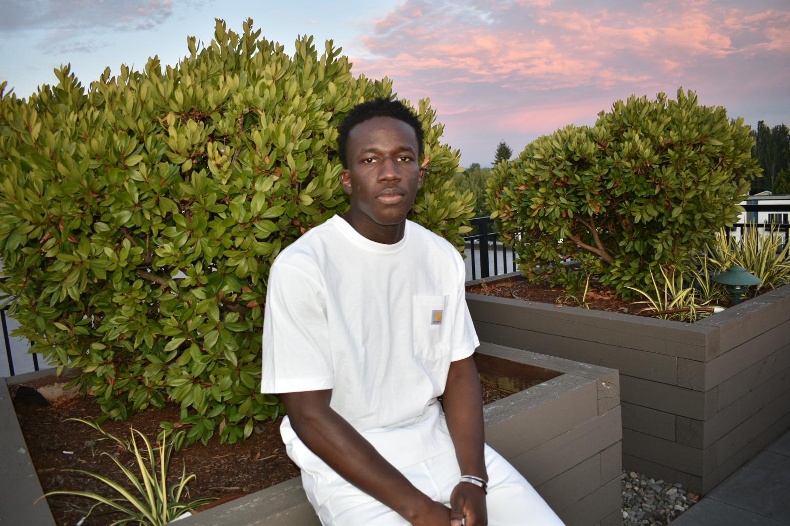

The Long Way In
A 20-image photographic narrative tracing the full trajectory of African footballers — from the hope and sacrifice of departure, through the racial hostility of arrival, to the psychological toll it exacts, and finally to the acts of resistance that refuse to let the story end there.
Between Dreams and Borders
The world before departure. Through still life compositions of everyday objects — boots, passports, clocks, family photographs — this chapter argues that for many young African players, football is not sport. It is a strategy of survival, a collective wager placed by entire families on the body and talent of one person.


Upon Arrival
The dream lands — not in triumph, but in a system already prepared to use it. Drawing from the documented experiences of Vinícius Júnior, Mario Balotelli, Marcus Rashford, and Victor Osimhen, this chapter places the artist's own body inside the visual language of racial abuse.


Impact
What the system produces in the body, mind, spirit, and emotions of a person who survives it. This chapter moves inward — from the visible hostility of the crowd and media to the psychological emptiness, spiritual anchoring, enforced silence, and the quiet of aftermath.


Resistance & Change
Knowledge, protest, solidarity, collective refusal, institutional accountability, and the final argument — beneath every visible difference, the substance is the same.



Ahmed Baba Tandia
Biography — EnglishAhmed Baba Tandia was born in January 2005 in Bamako, Mali, where he was raised until the age of thirteen, when he moved to the United States to join his siblings and continue his education. He is currently a rising senior at Whitman College in Walla Walla, Washington, pursuing a Bachelor's degree in Computer Science, with a graduation date set for May 2027. Alongside his studies, he serves as a Software Engineer Intern at Microsoft — a practice that runs parallel to, and informs, his commitment to using technology and visual art as tools for social change.
Football has been a constant throughout his life. He played competitively through his senior year of high school, after which he was offered a full academic scholarship to attend Whitman College to pursue his education. It is through the sport that his relationship to questions of race, belonging, and visibility first formed — long before they became the subject of his photography.
Beyond football and software, Tandia practices Brazilian Jiu-Jitsu — a discipline introduced to him by his older brother Bousseye, who is into combat sports and loves watching UFC. He holds a blue belt, competes regularly, and coaches the children's program at his academy. At Whitman, his technical ambition was recognized early: as a freshman, his project received an honorable mention at the college's inaugural Hackathon; the following year, competing as part of a four-person team, he took first place.
Tandia's relationship with photography began informally, during Eid celebrations in high school, where he was always the one behind the camera — playfully competing with his older brother Mohamed over who could find the best light and the strongest frame. What started as a game became a serious practice when, in the spring semester of his junior year, he enrolled in Intermediate Photography at Whitman College under Professor Robin North.
It was during that course — researching notable photographers for a class presentation — that Tandia encountered the work of Omar Victor Diop. Diop's project Diaspora, in which he uses self-portraiture and football references to explore the duality of Black visibility and exclusion, gave Tandia a language for something he had long felt but had not yet known how to express. "I had always wanted to do something," he has said, "but I never knew how."
The result was The Long Way In — a 20-image photographic narrative structured in four chapters, tracing the full arc of the African footballer's journey: the hope and sacrifice before departure, the racial hostility of arrival in Western leagues, the psychological and physical toll exacted by that system, and the acts of resistance that refuse to let the story end there. What began as a class project is now the foundation of an ongoing social justice initiative — a new practice Tandia has committed to as a vehicle for fighting racism and cultural injustice through visual storytelling.
Ahmed Baba Tandia
Biographie — FrançaisAhmed Baba Tandia est né en janvier 2005 à Bamako, au Mali, où il a grandi jusqu'à l'âge de treize ans, avant de rejoindre ses frères et sœurs aux États-Unis pour poursuivre ses études. Il est actuellement étudiant en dernière année à Whitman College, à Walla Walla dans l'État de Washington, où il prépare une licence en informatique, avec une date de diplôme prévue en mai 2027. En parallèle de ses études, il exerce en tant qu'ingénieur logiciel stagiaire chez Microsoft — une pratique qui complète et nourrit son engagement à utiliser la technologie et l'art visuel comme outils de changement social.
Le football a été une constante tout au long de sa vie. Il a joué de manière compétitive jusqu'en terminale, après quoi il s'est vu offrir une bourse académique complète pour intégrer Whitman College et y poursuivre ses études. C'est à travers ce sport que sa relation aux questions de race, d'appartenance et de visibilité s'est d'abord formée — bien avant qu'elles ne deviennent le sujet de sa photographie.
Au-delà du football et de l'informatique, Tandia pratique le Jiu-Jitsu Brésilien — une discipline que lui a fait découvrir son frère aîné Bousseye, passionné de sports de combat et grand amateur d'UFC. Ceinture bleue, il participe régulièrement à des compétitions et entraîne également les enfants au sein de son académie. À Whitman, sa rigueur technique a été reconnue très tôt : en première année, son projet a reçu une mention honorable lors du premier Hackathon de l'établissement ; l'année suivante, en équipe de quatre, il a remporté la première place.
Sa relation avec la photographie a débuté de façon informelle, lors des célébrations de l'Aïd au lycée, où il était toujours celui derrière la caméra — rivalisant amicalement avec son frère aîné Mohamed pour trouver la meilleure lumière et le meilleur cadrage. Ce qui avait commencé comme un jeu est devenu une pratique sérieuse lorsque, au semestre de printemps de sa troisième année, il s'est inscrit au cours de photographie intermédiaire à Whitman College, sous la direction du professeur Robin North.
C'est durant ce cours que Tandia a découvert l'œuvre d'Omar Victor Diop. Le projet Diaspora de Diop, dans lequel il utilise l'autoportrait et des références au football pour explorer la dualité entre visibilité et exclusion des Noirs, a donné à Tandia un langage pour quelque chose qu'il ressentait depuis longtemps sans savoir comment l'exprimer.
Offside — un récit photographique de 20 images structuré en quatre chapitres — retrace l'arc complet du parcours du footballeur africain : l'espoir et le sacrifice avant le départ, l'hostilité raciale à l'arrivée dans les ligues occidentales, le tribut psychologique et physique qu'impose ce système, et les actes de résistance qui refusent de laisser l'histoire s'arrêter là. Ce qui a commencé comme un projet de classe est aujourd'hui le fondement d'une initiative de justice sociale — une nouvelle pratique à laquelle Tandia s'est engagé pour lutter contre le racisme et les injustices sociales et culturelles à travers la narration visuelle.
Get in Touch
For exhibition inquiries, press, collaborations, or to discuss the work.